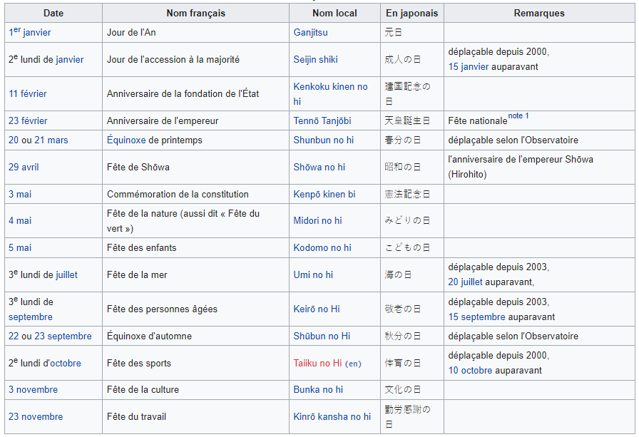
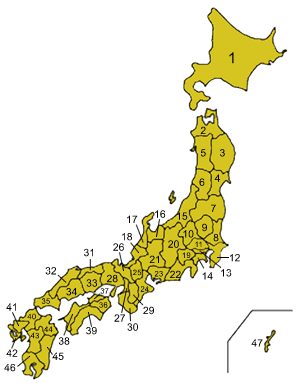

Le Japon (en japonais : 日本, Nihon,) est un pays insulaire de l'Asie de l'Est, situé entre l'océan Pacifique et la mer du Japon, à l'est de la Chine, de la Corée du Sud, de la Corée du Nord et de la Russie, et au nord de Taïwan. Étymologiquement, les kanjis (caractères chinois) qui composent le nom du Japon signifient « pays (国, koku) d'origine (本, hon) du Soleil (日, ni) » ; c'est ainsi que le Japon est désigné comme le « pays du soleil levant ». Le Japon forme, depuis 1945, un archipel de 6 852 îles (de plus de 100 m2), dont les quatre plus grandes sont Hokkaidō, Honshū, Shikoku et Kyūshū, représentant à elles seules 95 % de la superficie terrestre du pays. L'archipel s'étend sur plus de trois mille kilomètres. La plupart des îles sont montagneuses, parfois volcaniques. Ainsi, le plus haut sommet du Japon, le mont Fuji (3 776 m), est un volcan dont la dernière éruption a eu lieu en 1707. Le Japon est le onzième pays le plus peuplé du monde, avec plus de 125 millions d'habitants pour 377 975 km2 (337 hab./km2), dont l'essentiel est concentré sur les étroites plaines littorales du sud de Honshū et du nord de Shikoku et Kyūshū, formant un ensemble pratiquement urbanisé en continu appelé « Mégalopole japonaise » ou « Taiheiyō Belt » (太平洋ベルト, Taiheiyō beruto?, littéralement « ceinture Pacifique »). Le Grand Tokyo, qui comprend la capitale Tokyo et plusieurs préfectures environnantes, est la plus grande région métropolitaine du monde, avec plus de 35 millions d'habitants. La ville a été première place financière mondiale en 1990. Les recherches archéologiques démontrent que le Japon était peuplé dès la période du Paléolithique supérieur. Les premières mentions écrites du Japon sont de brèves apparitions dans des textes de l'histoire chinoise du ier siècle. L'histoire du Japon est caractérisée par des périodes de grande influence dans le monde extérieur suivies par de longues périodes d'isolement. Depuis l'adoption de sa constitution en 1947, le Japon a maintenu une monarchie constitutionnelle avec un empereur et un parlement élu, la Diète. Le Japon est la troisième puissance économique du monde pour le PIB nominal et la quatrième pour le PIB à parité de pouvoir d'achat. Ce dynamisme économique s'appuie surtout sur une industrie performante et innovante, portée par de grands groupes d'importance mondiale appelés Keiretsu, tout particulièrement dans les secteurs de la construction automobile (troisième producteur mondial en 2017) ou de l'électronique de pointe. Il est aussi le quatrième pays exportateur et le sixième pays importateur au monde. Acteur majeur du commerce international et puissance épargnante, il a ainsi accumulé une position créancière nette vis-à-vis du reste du monde (en) de plus de 325 000 milliards de yens, le plaçant en première position devant la Chine. C'est un pays développé, avec un niveau de vie très élevé (dix-neuvième IDH le plus élevé en 2018), de faibles inégalités (le troisième IDH ajusté aux inégalités le plus élevé, toujours en 2018) et la plus longue espérance de vie au monde selon les estimations de l'ONU. Mais ce tableau idyllique ne doit pas masquer d'importants problèmes qui pèsent sur l'avenir du pays : le Japon souffre d'un des taux de natalité les plus bas du monde, très en dessous du seuil de renouvellement des générations. Le pays est actuellement en déclin démographique. C'est également le pays pour lequel le poids de la dette publique brute est le plus important au monde, cette dernière s'élève en 2017 à 240 % du PIB
La société japonaise est linguistiquement très uniforme avec 98,2 % de la population ayant le japonais pour langue maternelle. Les 1,8 % restant étant constitués principalement de populations d'immigrants venus de Corée (sept cent mille personnes) et de Chine (trois cent cinquante mille personnes), ainsi que de Vietnamiens, de Brésiliens, d'Américains (quatre-vingt mille personnes), d'Européens (quarante-cinq mille personnes). Il existe quelques variations dialectales sur l'île d'Okinawa. L'aïnou d'Hokkaidō est toujours parlé à l'intérieur de la communauté du peuple autochtone mais reste néanmoins en voie de disparition. L'anglais est la première langue étrangère apprise dès l'école primaire (et souvent, dès la maternelle), et est une langue très répandue comme langue étrangère, surtout chez les plus jeunes. Le chinois mandarin arrive en seconde position, puis le coréen
Le shintoïsme est la principale religion du Japon, les Japonais sont ainsi traditionnellement animistes avec une pratique chamanique, comme en attestent l'usage de nombreuses amulettes, tant à la maison qu'en voyage. Les autres religions subissent souvent une réappropriation animiste de leurs dieux dans le panthéon personnel ou collectif des Japonais. La plupart des Japonais ne croient ainsi pas en une religion particulière et unique, mais font preuve de syncrétisme, notamment à l'égard du bouddhisme, mais aussi plus généralement à l'égard de l'ensemble des religions. Beaucoup de japonais pratiquent donc des rites de plusieurs religions au cours de leur vie. Une même personne peut aller invoquer les dieux au sanctuaire shintoïste à l'occasion du Nouvel An et tenter d'attirer leur attention avant les examens d'entrée à l'école ou à l'université. Raisonnant de manière confucianiste, elle souhaitera parfois un mariage à l'occidentale dans une église chrétienne après une cérémonie plus traditionnelle et aura des funérailles dans un temple bouddhiste. Yuzen, un moine bouddhiste de l'école Zen Sōtō. Ce syncrétisme se réflète dans les statistiques de pratiques religieuses du ministère des Affaires intérieures et des Communications japonais, qui comptabilisait en 2014122 :92,169 millions de shintoïstes (72,5 % de la population) ; 87,126 millions de bouddhistes (68,6 % de la population) ;près de 1,951 millions de chrétiens (1,5 % de la population) ;autres religions : 8,974 millions de Japonais (7,1 % de la population). Le Japon a connu un « siècle chrétien » à la suite de l'arrivée des missionnaires portugais puis celle du jésuite espagnol François Xavier en 1549. La nouvelle religion rencontra rapidement un grand succès dans le sud du pays (notamment dans la région de Nagasaki). Après une relative tolérance initiale, le catholicisme est cependant rapidement persécuté, puis interdit et puni de mort à partir de 1614. Certains chrétiens rentrèrent en clandestinité, devenant des kakure kirishitan (« chrétiens cachés »). Le christianisme est ré-autorisée sous l'ère Meiji. Durant l'ère Meiji, l'Etat instaura à la fois la liberté de culte et pris le contrôle du shintoïsme en faisant une religion privilégiée. Ce shintoïsme d'État fut indissociable du nationalisme nippon qui prônait une élimination pure et simple des apports, pourtant anciens, du bouddhisme. Au cours de la Seconde Guerre Mondiale, il fut exigé du peuple japonais de participer aux cérémonies shintoïstes et les activités des autres religions furent fortement limitées. Aujourd'hui, de plus en plus nombreux sont les Japonais, particulièrement au sein de la jeune génération, opposés aux religions à la fois pour ces raisons historiques et en raison du développement de la science. En 2010, le centre islamique du Japon estimait à 100 000 le nombre de musulmans dans le pays123. Seuls 10 % d'entre eux seraient Japonais124. Un certain nombre de nouvelles religions ou sectes, dont la Sōka Gakkai et ses six millions de membres, qui se sont établies juste avant ou à la suite de la Seconde Guerre mondiale occupent une place importante au Japon.

note: lorsque la date d'un jour férié tombe un dimanche, c'est le lendemain qui est férié
Le Kimi ga yo est l'hymne national du Japon. Le chrysanthème est le symbole de la famille impériale et on en trouve un sur le sceau impérial du Japon. La libellule est un symbole du Japon : Akitsu Shima (« les îles des libellules ») est une ancienne désignation du Japon. Le cerisier du Japon symbolise également le pays.

| préfectures du japon | |||
|---|---|---|---|
| 01- Hokkaidō | 02- Aomori | 03- Iwate |  |
| 04- Miyagi | 05- Akita | 06- Yamagata | |
| 07- Fukushima | 08- Ibaraki | 09- Tochigo | |
| 10- Gunma | 11- Saitama | 12- Chiba | |
| 13- Tokyo | 14- Kanagawa | 15- Niigata | |
| 16- Toyama | 17- Ishikawa | 18- Fukui | |
| 19- Yamanashi | 20- Nagano | 21- Gifu | |
| 22- Shizuoka | 23- Aichi | 24- Mie | |
| 25- Shiga | 26- Kyoto | 27- Osaka | |
| 28- Hyōgo | 29- Nara | 30- Wakayama | |
| 31- Tottori | 32- Shimane | 33- Okayama | |
| 34- Hiroshima | 35- Yamaguchi | 36- Tokushima | |
| 37- Kagawa | 38- Ehime | 39- Kōchi | 47 préfectures (ou département) dont :
|
| 40- Fukuoka | 41- Saga | 42- Nagasaki | |
| 43- Kumamoto | 44- Ōita | 45- Miyazaki | |
| 46- Kagoshima | 47- Okinawa | ||
ONU : Organisation des nations unies
PIB : Produit Intérieur Brut